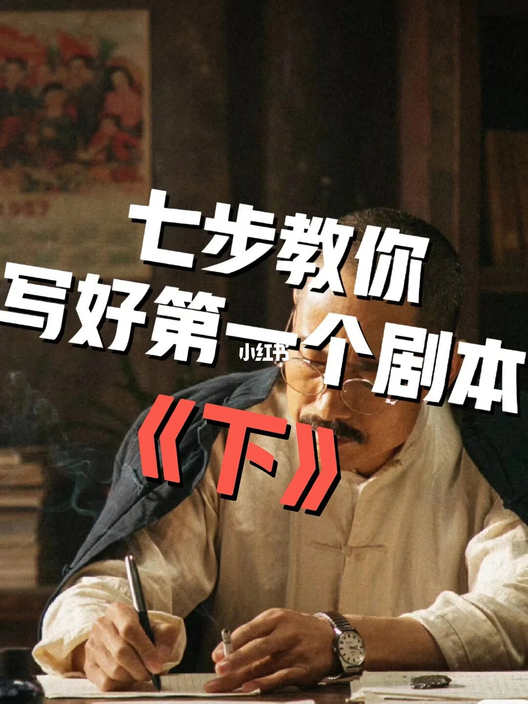
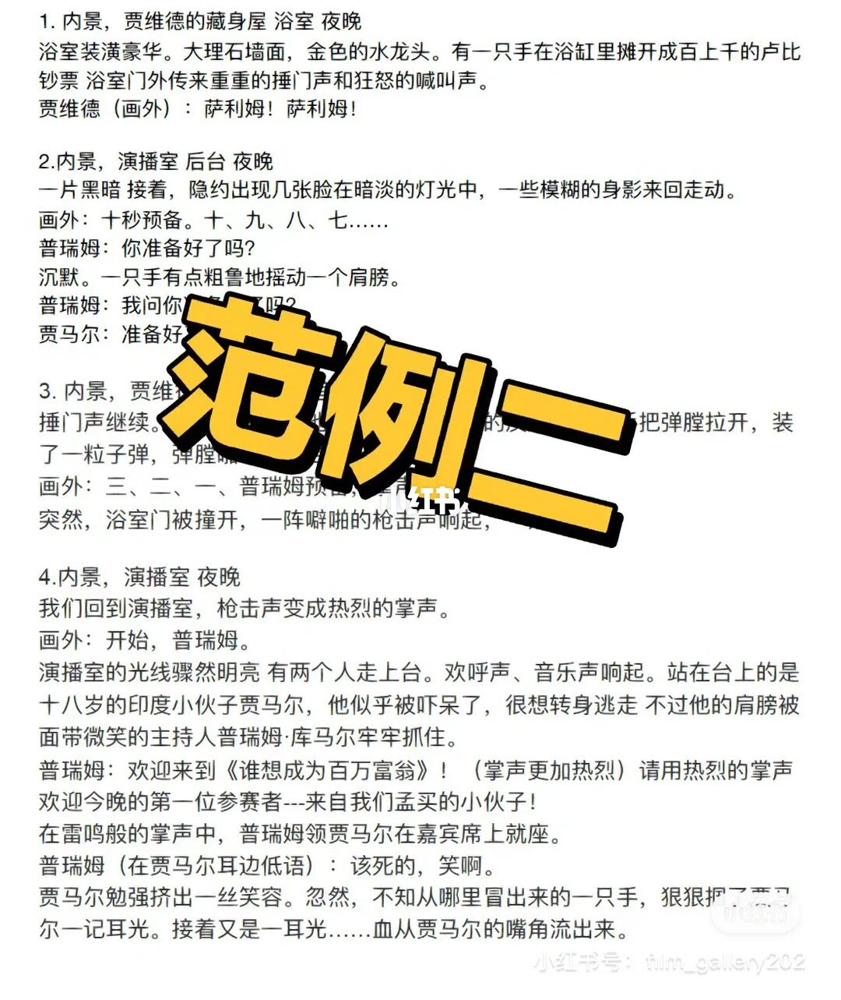
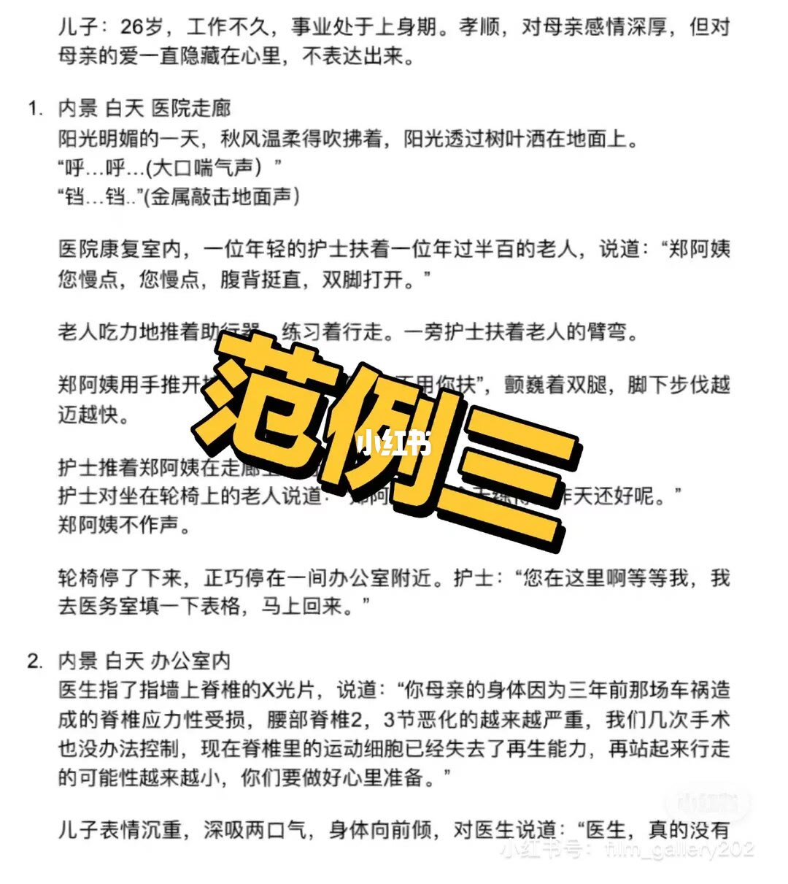

内容要点（文案层）
08 角色 — 人物小传：过去、梦想与恐惧，让配角也有鲜明个性。
09 对话 — 每句台词要么揭示性格要么推进情节；保留独特语气，删冗长。
10 冲突 — 外冲突与内冲突贯穿；每场戏加一点张力。
11 场景 — 场景细节承载信息与情绪，不只是过场布景。
总结
技巧清单要落到场次：用物件点火、用声音桥接、用小传支撑对白动机；范例比口号更可模仿。
图文实录
第 1 页 · 下集进入「写得像戏」的核心
封面：基础七步续篇——进入角色、对话、冲突与场景细节

[1/6] 封面：基础七步续篇——进入角色、对话、冲突与场景细节
Cover: part 2 of seven steps — characters, dialogue, conflict, scene craft
第 2 页 · 外景信息 + 室内物件 = 冲突点火
范例一：参军——广播/鞭炮外景切入，室内发现志愿书制造家庭张力
[2/6] 范例一：参军——广播/鞭炮外景切入，室内发现志愿书制造家庭张力
Example 1: enlistment — loudspeaker/firecrackers outside, volunteering paper sparks family tension
第 3 页 · 声音桥接两个世界
范例二：交叉剪辑——浴缸藏钱枪响切演播室倒计时与掌声

[3/6] 范例二：交叉剪辑——浴缸藏钱枪响切演播室倒计时与掌声
Example 2: cross-cut — bathtub cash/gunfire cuts to studio countdown and applause
第 4 页 · 先写人物小传再写对白
范例三：医院——康复踉跄对切诊室坏消息，人物小传先钉动机

[4/6] 范例三：医院——康复踉跄对切诊室坏消息，人物小传先钉动机
Example 3: hospital — rehab struggle cross-cuts to grim prognosis; bio pins motive first
第 5 页 · 续集收束到社群讨论
互动页：深入写作问题欢迎私信（账号 film_gallery202）
[5/6] 互动页：深入写作问题欢迎私信（账号 film_gallery202）
CTA: DM for deeper writing questions (film_gallery202)
第 6 页 · 一切技巧服务于故事
收束金句：故事是影片成功的开端
[6/6] 收束金句：故事是影片成功的开端
Closer: story is the beginning of a film's success